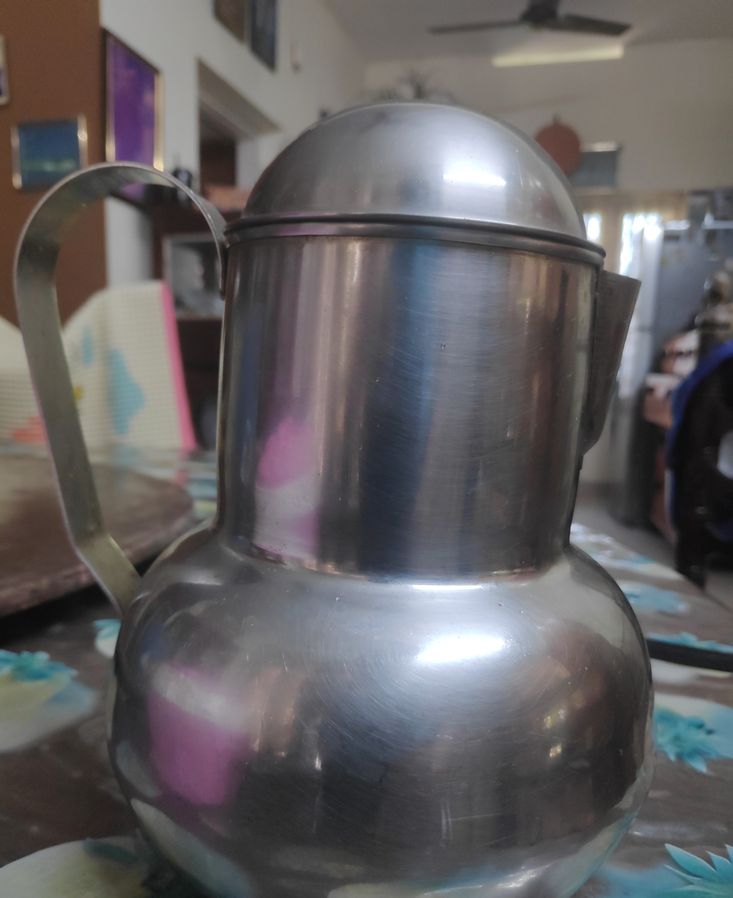
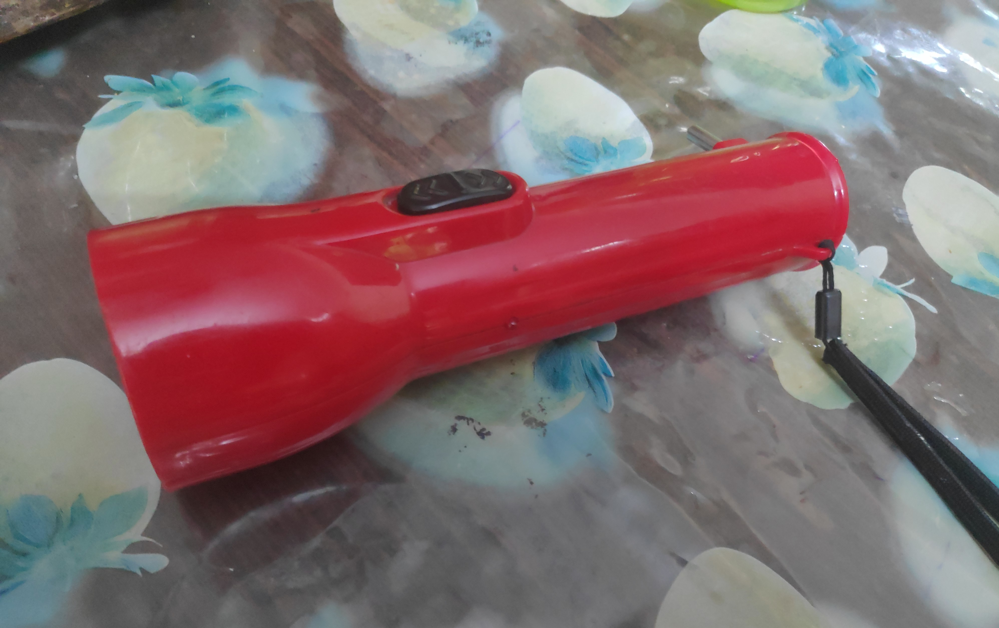
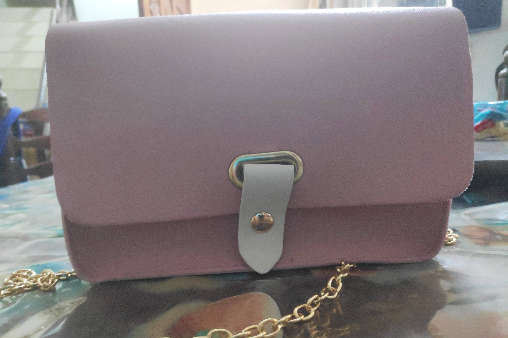

Case Study between Google Lens and MobileNet
Google Lens
VS
MobileNet
-
Test Image -

- Test Image -
- Test Image - 
- Test Image - 
- Test Image - 
Output on GOOGLE LENS - Water Bottle
Output on MobileNet Model - Water Bottle
- Result -
Output on GOOGLE LENS - Diary
Output on MobileNet Model - Document, Record
- Result -
Google Lens is more accurate
Output on Google Lens - Water Jug
Output on MobileNet Model - Thermos Flask
- Result -
Google Lens is more accurate
Output on Google Lens - Torch
Output on MobileNet Model - Lantern, Gaslight
- Result -
Google Lens is more accurate
Output on GOOGLE LENS - Handbag
Output on MobileNet Model - Suitcase, Rucksack
- Result -
Google Lens is more accurate
From all the above 5 tests, Google Lens has passed 4/5 test and MobileNet has passed 0/5 tests, hence Google Lens is more accurate.